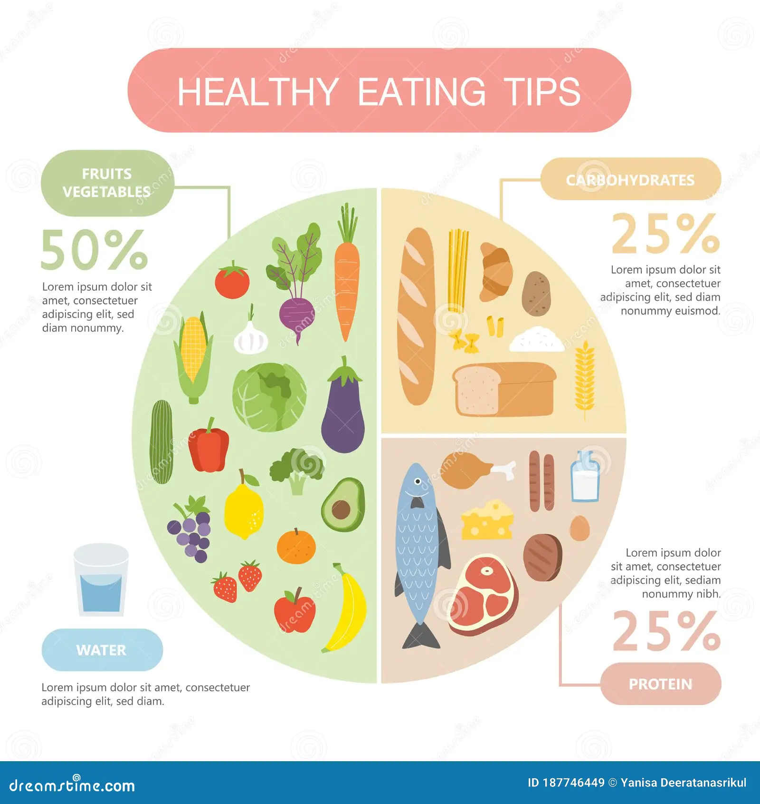
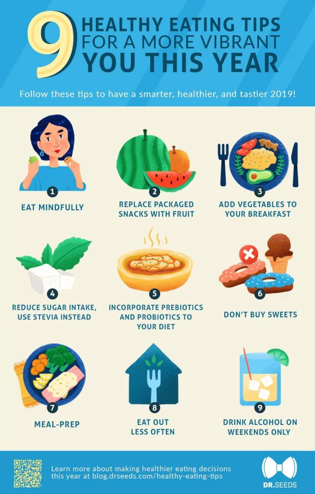

How to Make Healthy Eating Easy
Incorporating healthy eating habits into your daily life can be simple and enjoyable. Here are some practical tips to help you stay on track
Sections
- Meal Planning: Plan your meals and snacks in advance to ensure you have nutritious options available.
- Smart Grocery Shopping: Stick to the perimeter of the grocery store where fresh produce, meats, and dairy are located. Avoid processed foods in the center aisles.
- Healthy Cooking Techniques: Opt for baking, steaming, or grilling instead of frying. Use herbs and spices for flavor instead of excessive salt or sugar.
- Portion Control: Be mindful of portion sizes to avoid overeating. Use smaller plates to help with portion control.
- Healthy Snacks: Keep healthy snacks like nuts, fruits, and yogurt handy to curb hunger between meals.
- Mindful Eating: Pay attention to your hunger and fullness cues. Eat slowly and savor your food.
Tips To Eat Healthier
A diet rich in fruits and vegetables has been scientifically proven to provide numerous health benefits, such as reducing your risk of several chronic diseases and strengthening your immune system. Making major changes to your diet can sometimes seem very overwhelming. It may be more manageable to start with just one thing — like eating more of your favorite fruit — rather than all of them at once. This article discusses 25 ways to make your usual diet slightly healthier over time.